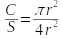
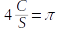

We know that π is the ratio of the circumference of a circle to its diameter - regardless of the size of the circle C/d = 3.14159.
We know the value of π, and don't really need to estimate it. We can take advantage of the fact we know its value, though, to learn about estimation.
A circle with radius r has an area of πr2, which we'll call C. A square that contains the circle, such that the circle touches all four sides of the square, will have a side length of 2r, and an area of (2r)2 or 4r2 - we'll call this area S. The ratio of the area of the circle to the area of the square is thus:

Solving for π gives us an estimator for π in terms of the relative areas of the circle and square:

Now, if you look at the picture below you'll see that some points are being randomly placed, all of which fall inside the square and some of which also fall inside the circle. If we assume that the number that will fall in the circle is proportional to the size of the circle, we can count up how many fall inside the circle as an index of the size of the circle (in statistics an index is a variable that is expected to change consistently when another variable changes, and can thus be used as an indicator of the second variable). The total number of points is an index of the size of the square. Multiplying the number of points falling inside of the circle by 4 and dividing by the number of points in the square gives us an estimator for π.
In circle = C = In square = S = Estimated value of π = 4C/S =
Enter a sample size:
Number of estimates = Mean of estimates of π =
If you hit the "Randomize" button a new set of points is selected, with the number created equal to the sample size specified. Each time you select a new set of points you'll generate a new estimate, which is added to the histogram on the right. The average of the estimates is reported as "Mean of estimates of π = ". As you select multiple sets of points you'll see that the estimates vary, and will not equal 3.14. You can click the "Select 1,000" button to repeat the selection 1,000 times, and if you do you'll see that the mean of the estimates is close to 3.14. This shows you that this estimator is unbiased - the average of the estimates equals the value we are estimating. A biased estimate would give us an average of the estimates that is not equal to 3.14.
Even with a small sample size of 10 the estimator is unbiased. Increasing the sample size isn't necessary to get an unbiased estimate, but it does give us better precision. Try increasing to sample size to 100 and see how 1,000 estimates at that sample size vary. You should see that the estimates fall closer on average to 3.14, so any single estimate based on a sample size of 100 will tend to be closer to the correct value than a sample of size 10. You can increase the sample size to 1000 and the precision will be even better.